로체스터 파크 필드트립 ⛲
물놀이 · 모래놀이 · 블랙베리 따기
Field Trip Day! 🚌
As promised — field trip day! After a morning of poster work and a warm Korean lunch, we headed to Rochester Park for the afternoon: splash pad water play, a giant sandbox, picnic snacks under the shelter, and even wild blackberry picking. Sunshine, water, and berries — summer at its best. ☀️

🎨 Morning Work First Posters & Piano
Before the fun: our young researchers kept building their presentation posters — “Different Kinds of Cats” and a bunny research board — while one little musician warmed up the room on the piano. 🎹
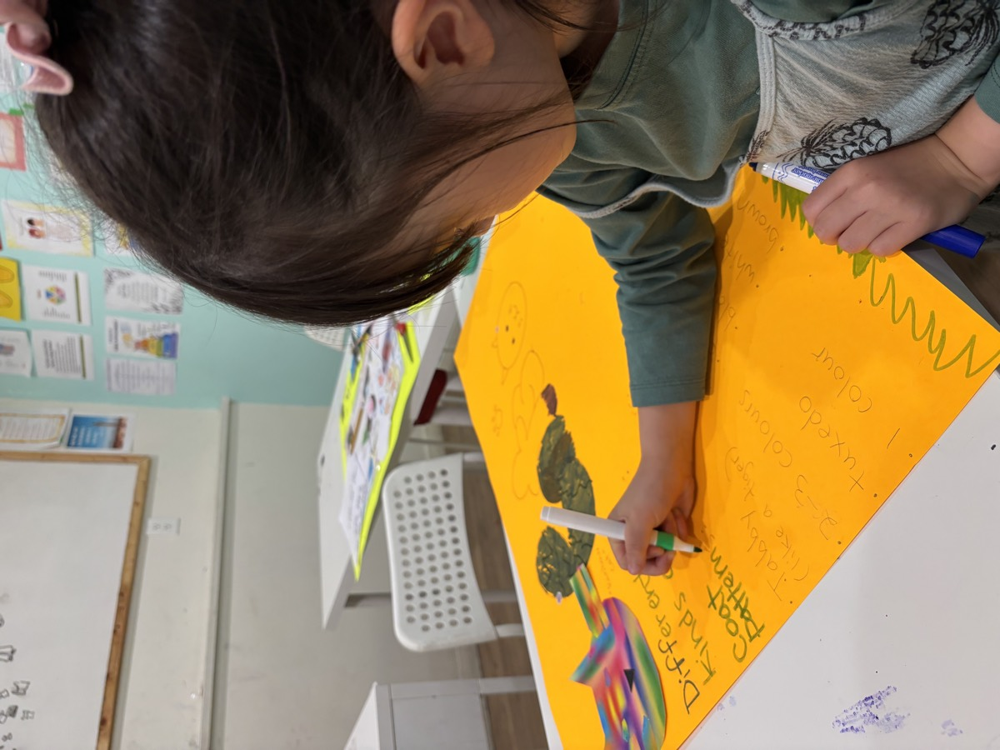
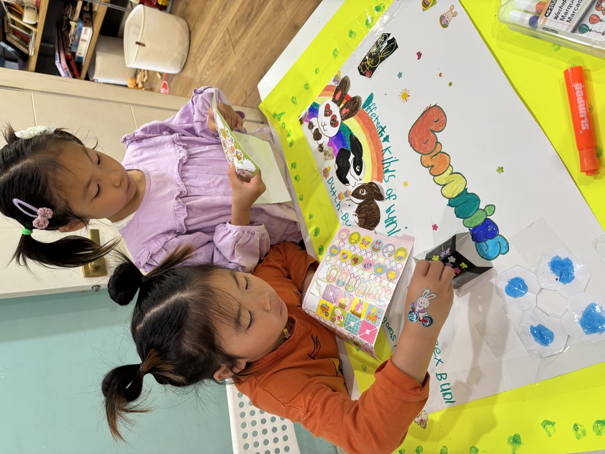
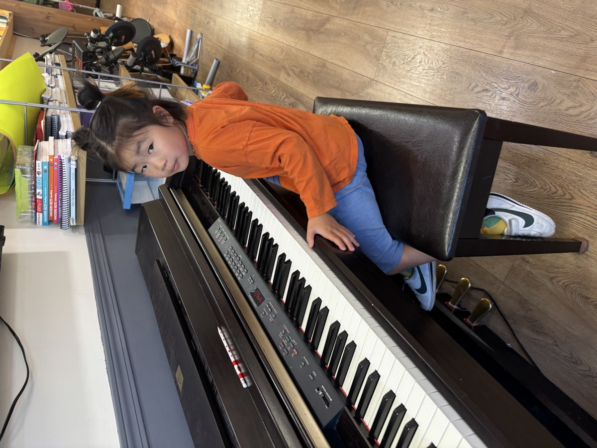
🍱 Lunch Fuel Up for the Trip
A hearty homemade lunch before heading out — rice, kimchi, roasted seaweed, and bulgogi, served fresh at the counter. 🍚
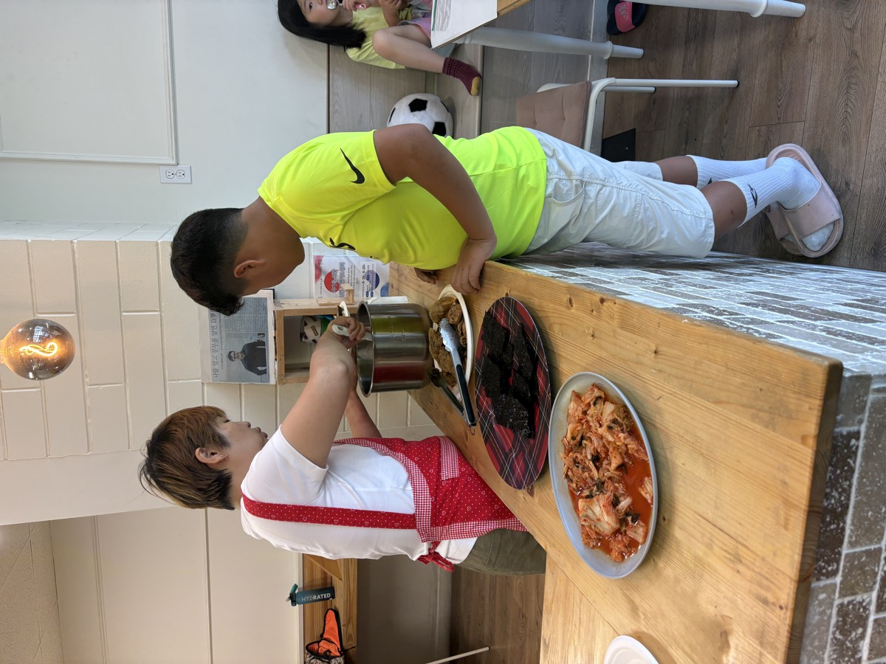
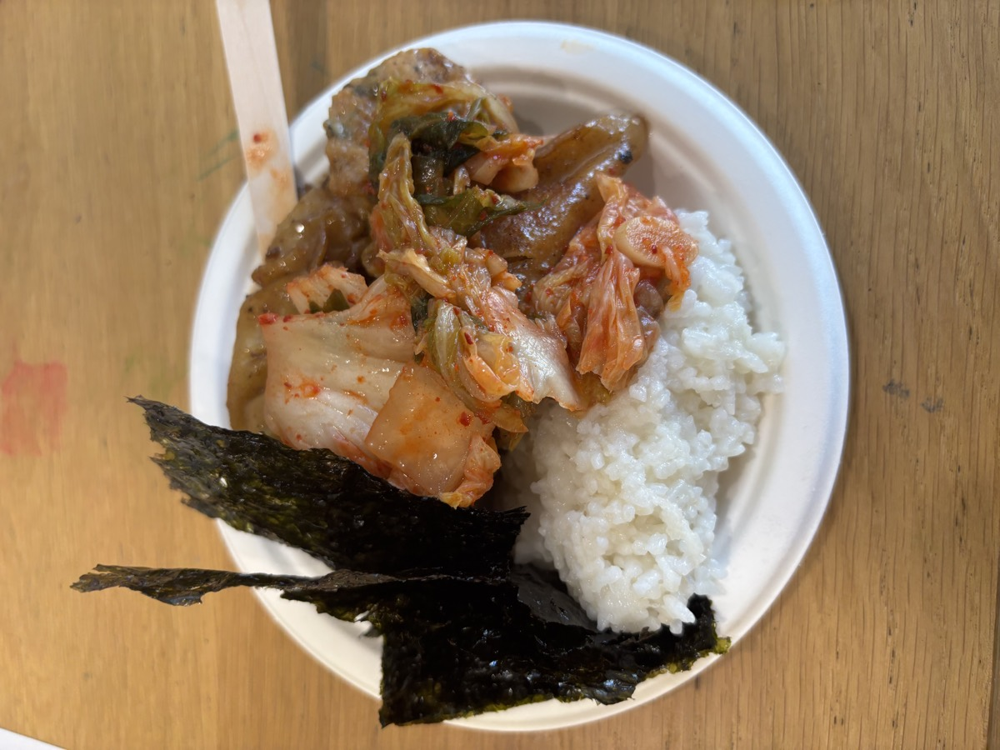
🚌 And We're Off! 1:30 Departure
Lined up, sunscreened, and ready — off to Rochester Park!
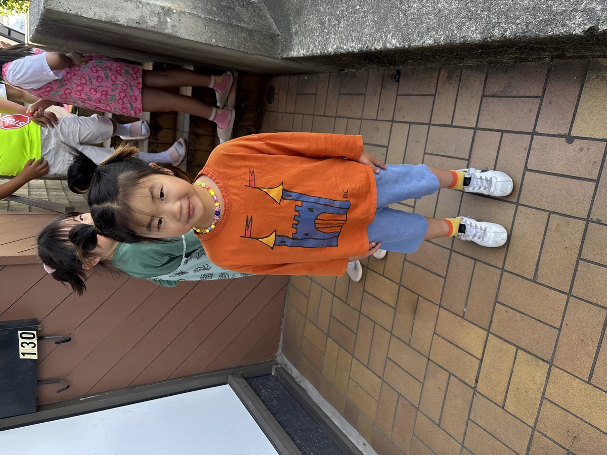
⛲ Splash Pad The Main Event
The splash pad was an instant hit — fountains shooting up from the ground, kids darting between the jets, and a whole lot of happy shrieking. (Those spare clothes came in handy!) 💦
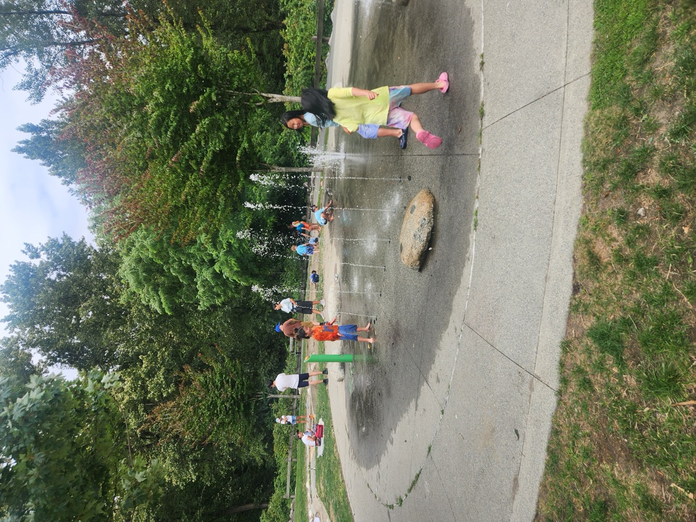
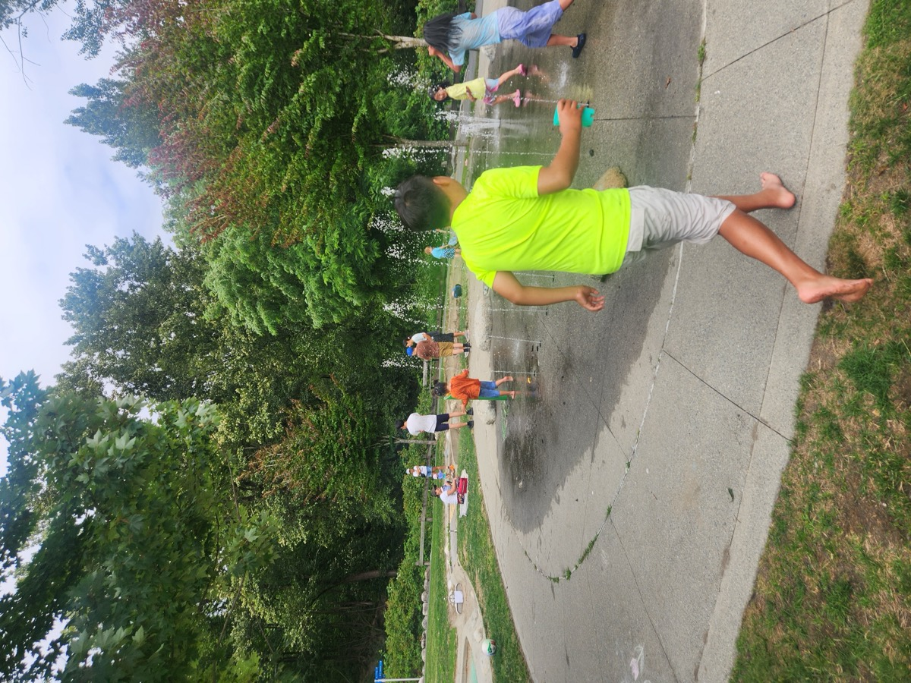
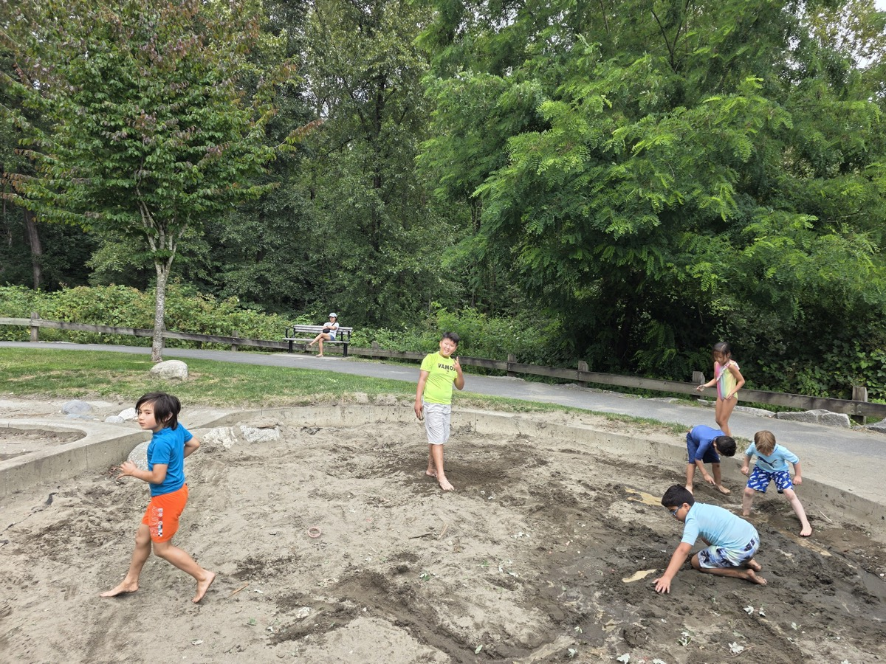
🏖️ Sandbox & Snack Break Picnic Shelter HQ
Between splashes: digging in the giant sandbox and refueling with snacks at the picnic shelter — bread and chips shared all around. 🥨
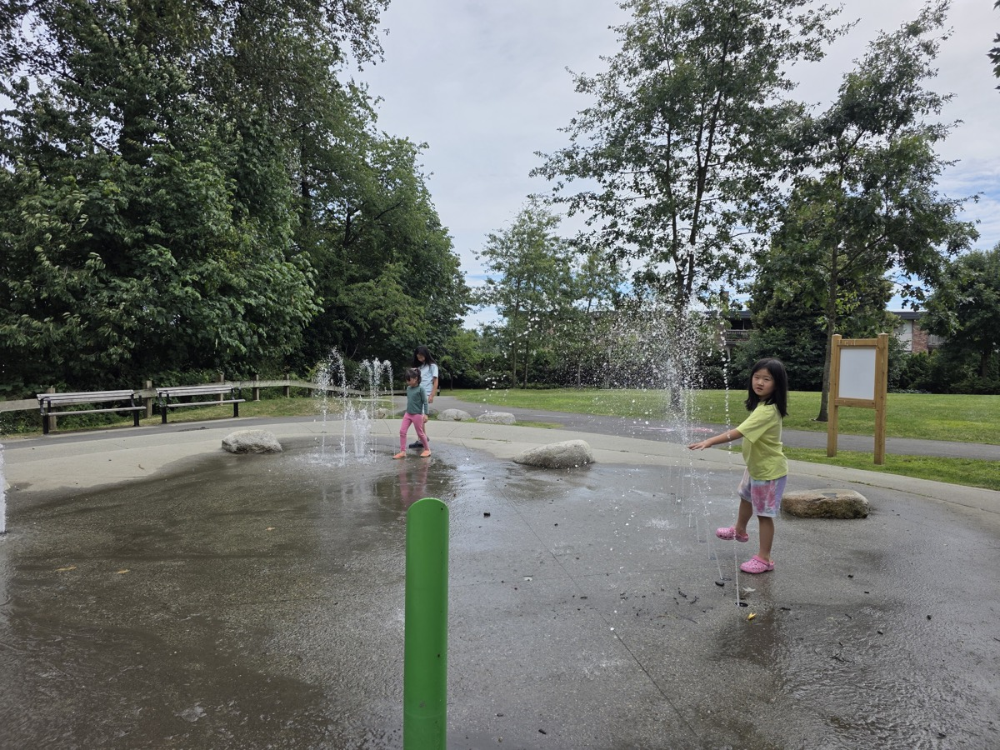
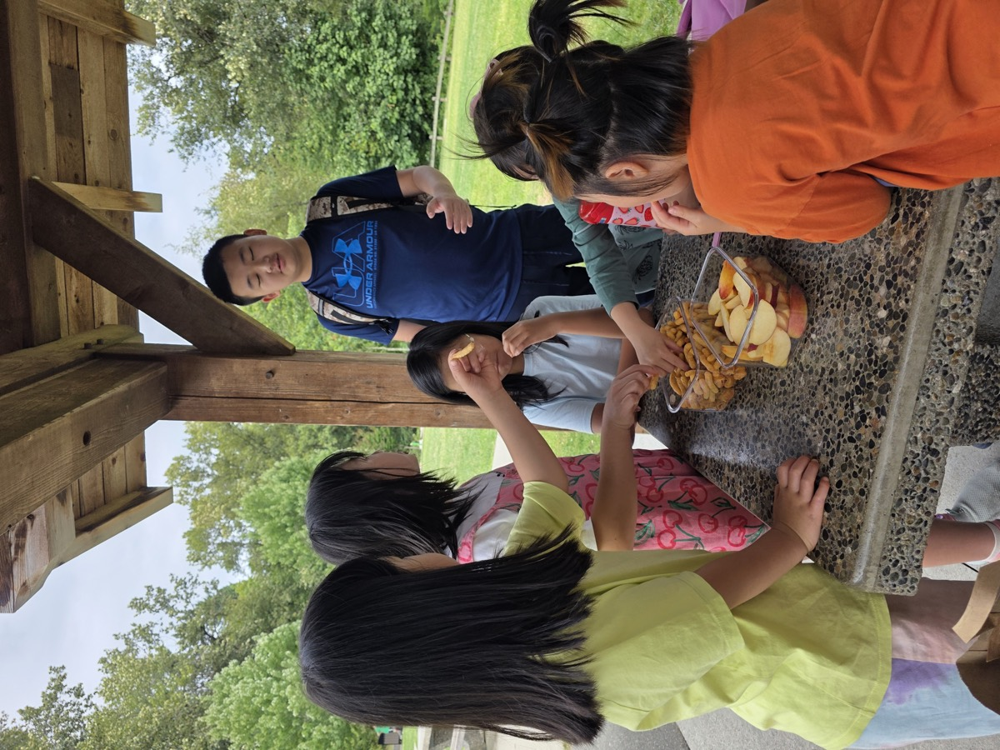
🫐 Blackberry Picking Nature's Dessert
The sweetest discovery of the day: wild blackberry bushes along the park trail! The kids picked (and taste-tested) ripe berries straight from the vine — nature's dessert. 🫐
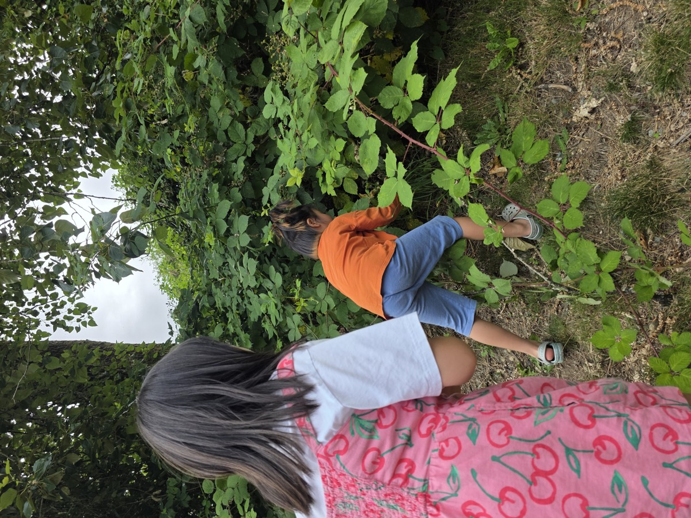
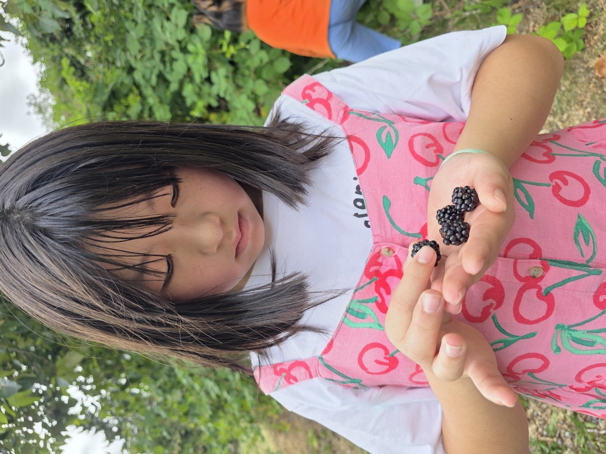
Back safe and sound (before 4 o'clock, as promised) — sun-tired, a little damp, and very happy. What a field trip! See you tomorrow for the Week 2 finale! 🎉
- Phone
- 778-258-2223
- @jc_afterschool
- Location
- #130 – 1140 Austin Ave, Coquitlam, BC